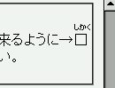

ルビが設定された文字がページの右端にある（行の最後の文字である）とき、ルビ文字が正しい位置に表示されない。
<p>ルビが…… <ruby><rb>□<rb><rp>（</rp><rt>しかく</rt><rp>）</rp></ruby> ……ください。</p>
ルビが設定された文字が行末に来るように→□（しかく）←ウィンドウサイズを調整してください。
「□」にルビを設定しています。この文字が行末に置かれるようにウィンドウサイズを調整してください。
WinIE6.0での表示（互換モード）
MacIE5.0〜5.2で不具合が発生するそうです。